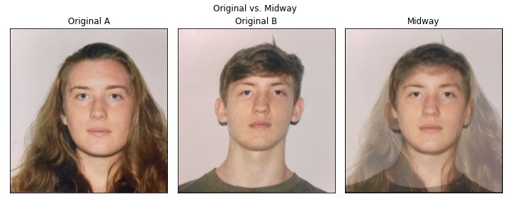

Eden McEwen
In this project I explore something my family has always pondered, how similar are me and my brother? I take our actual passport photos and morph them together using the techniques discussed in class.
Part 1: Defining Correspondences
I first set up theinteractive system to define correspondences, keeping points in the same order per selection. the triangulation was computed on the midpoints of the two sets of points.
Part 2: Computing the "Mid-way Face"
Now that we have two sets of points, we need an operation to go between them. I set up my implementaion of the Affine matrix by taking two sets of triangle verticies, and back solving for the transformation matrix between them.
I then use this affine function to perfome an inverse warp. Instead of transforming each image pixel to the midway face, I take each pixel in the midway fave, filtered by which triangluation it belongs to, to warp to one of the two images. This ensures each pixel of the midway face is accounted for. Non-integer warps are delt with interpolation via a RectBivariateSpline.
After performing an inverse warp, we get the following two midway images ( here the warp fraction is 0.5).
We then take a dissolve fraction of 0.5 to blend these two images together, like so:

Part 3: The Morph Sequence
Finally, we can create a morph sequence! This is done by iterating over increasing blend and warp fractions via the newly implemented morph function.

Part 4: The "Mean face" of a population
What would I Look like as a Dane? In this section, I use the Danish face set, cited below, to morph my features to be a bit more danish.
M. B. Stegmann, B. K. Ersbøll, and R. Larsen. FAME – a flexible appearance modelling environment. IEEE Trans. on Medical Imaging, 22(10):1319–1331, 2003
Part 4a: Population mean
First, I pull points from the pre-label data set, and compute the average feature location using normalized pixel values.
Next, I morph each provided image to this mean position. This puts all of the faces in the same position on the image plane. Below are a few examples of those morphed images. You can see that the faces are very proportionally similar on the bottom row of morphed images.
We then can take each morphed image and stack them, creating an population mean. The features that are clearest are in the center, where we have the highest concentrations of feature points.
Part 4b: Me on the mean!
Now lets put me into the mix! One of the most challenging parts was carefully following the order of points laid out by the specifications of the dataset.
I made sure to resize my image, and carefully select points with the code created above:
Now that we have correspondences, I can morph my face onto the structure of the average Dane population. I do this below, and you can see that the way the correspondences were taken, foreheads were very unconstrained! As a Dane my brain is much bigger. There were also more male faces, so my jawline follows suit and becomes much sharper.

I can do the opposite, structuring the average Dane onto my own face structure. This rounds out their faces, and enlarges their eyes, following my own facial features.
Part 5: Caricatures: Extrapolating from the mean
So I don't like how I look as Dane! Instead looking more danish, we can subtract their features by using a negative alpha, and deviating from their appearance. I now have a much smaller forehead and nose! I look a little snooty.
Part 6: Smiling and frowning.
I always regretted I didn't smile more in my passport photo! Using the similing portion of the danish dataset, I was able to rectify an old mistake. Similar to the characture above, I used apla to add a smile to my facial features:
I can also subtract one:
Conclusion
This project allowed me to test facial warpings, develop my own affine function, and morphing procedures. I also got to freak out my parents by facial morphing their children together.